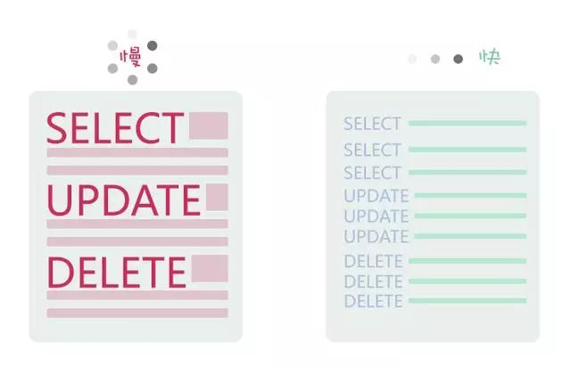

程序嵌入SQL语句优化小技巧
1、比较运算符能用’=’就不用’<>’
‘=’增加了索引的使用几率
2、明知只有一条查询结果，那请使用’LIMIT 1’
‘LIMIT 1’可以避免全表扫描，找到对应结果就不会再继续扫描了
3、为列选择合适的数据类型
能用TINYINT就不用SMALLLINT,能用SMALLINT就不用INT，内存消耗越小越好
4、将大的DELETE，UPDATE或者INSERT查询变成多个小查询
为了达到更好的性能以及更好的数据控制，可以将它们变成多个小查询

5、如果结果集允许重复的话，使用UNION ALL代替UNION
因为UNION ALL不去重复，效率高于UNION
6、为获得相同结果集的多次执行，请保持SQL语句前后一致
目的是为了充分利用查询缓冲，比如根据地域或者产品id查询产品价格，第一次使用了1
SELECT price FROM order WHERE id = 123456 and region = 'BEIJING';
那么第二次同样的查询，请保持以上语句的一致性，比如不要将where语句里面的id和region位置调换顺序。
7、避免使用’SELECT *’
如果不查询表中所有的列，尽量避免使用SELECT *，因为这样会进行全表扫描，不能有效利用索引，增大了数据库服务器的负担，以及它与应用程序客户端之间的网络IO开销。
8、WHERE子句里面的列尽量被索引
只是’尽量’，并不是说所有的列。因地制宜，根据实际情况进行调整，索引太多也会降低性能。
9、JOIN子句里面的列尽量被索引
同样只是’尽量’
10、ORDER BY的列尽量被索引
性能会更好
11、使用LIMIT实现分页逻辑
提高性能，减少不必要数据库和应用的网络传输
12、使用EXPLAIN关键字去查看执行计划
EXPLAIN可以检查索引使用情况以及扫描的行。
13、不要在MySQL中使用UTF-8
1.MySQL的“utf8mb4”是真正的“UTF-8”。
2.MySQL的“utf8”是一种“专属的编码”，它能够编码的Unicode字符并不多。
使用“utf8”的MySQL和MariaDB用户都应该改用“utf8mb4”，永远都不要再使用“utf8”。
原理介绍：链接
more
SQL调优方法还有很多种，同样的查询结果可以有很多种查询方式，最好的方法就是测试！